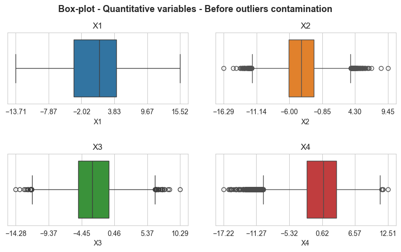

data#
outlier_contamination#
Contaminates with outliers a data matrix.
Parameters (inputs)
----------
X: a pandas/polars series. It represents a statistical variable.
col: the name of a column of `X`.
prop_below: proportion of outliers generated in the below part of `X`. Only used if below = True.
prop_above: proportion of outliers generated in the above part of `X`. Only used if above = True.
sigma: parameter that controls the upper bound of the generated above outliers and the lower bound of the lower outliers.
random_state: controls the random seed of the random elements.
Returns (outputs)
-------
X_new: the resulting variable after the outlier contamination of `X`.
outlier_idx_below: the index of the below outliers.
outlier_idx_above: the index of the above outliers.
Example#
import pandas as pd
import polars as pl
from sklearn.datasets import make_blobs
from DBRobustClust .data import outlier_contamination
from BigEDA.descriptive import outliers_table
from BigEDA.plots import boxplot_matrix
X, Y = make_blobs(n_samples=35000, centers=4, cluster_std=[2,2,2,3], n_features=8, random_state=123)
X = pd.DataFrame(X)
X.columns = [f"X{i}" for i in range(1, X.shape[1]+1)]
# Se convierten dos variables cuantitativas a binarias, y otras dos a multiclase, discretizandolas.
X['X5'] = pd.cut(X['X5'], bins=[X['X5'].min()-1, X['X5'].mean(), X['X5'].max()+1], labels=False)
X['X6'] = pd.cut(X['X6'], bins=[X['X6'].min()-1, X['X6'].mean(), X['X6'].max()+1], labels=False)
X['X7'] = pd.cut(X['X7'], bins=[X['X7'].min()-1, X['X7'].quantile(0.25), X['X7'].quantile(0.50), X['X7'].quantile(0.75), X['X7'].max()+1], labels=False)
X['X8'] = pd.cut(X['X8'], bins=[X['X8'].min()-1, X['X8'].quantile(0.25), X['X8'].quantile(0.50), X['X8'].quantile(0.75), X['X8'].max()+1], labels=False)
X_outliers, outliers_idx_X1 = outlier_contamination(X, col_name='X1', prop_above=0.1, sigma=3, random_state=123)
X_outliers, outliers_idx_X2 = outlier_contamination(X_outliers, col_name='X2', prop_below=0.1, sigma=5, random_state=123)
X_outliers_pl = pl.from_pandas(X_outliers)
X_not_outliers_pl = pl.from_pandas(X)
X = X_outliers.copy()
outliers_table(X_not_outliers_pl, auto=False, col_names=['X1', 'X2', 'X3', 'X4'], h=1.5)
quant_variables |
lower_bound |
upper_bound |
n_outliers |
n_not_outliers |
prop_outliers |
prop_not_outliers |
|---|---|---|---|---|---|---|
“X1” |
-14.782543 |
15.560064 |
0 |
35000 |
0.0 |
1.0 |
“X2” |
-11.860462 |
3.64293 |
144 |
34856 |
0.004114 |
0.995886 |
“X3” |
-11.847622 |
6.501432 |
43 |
34957 |
0.001229 |
0.998771 |
“X4” |
-10.074609 |
11.152553 |
519 |
34481 |
0.014829 |
0.985171 |
outliers_table(X_outliers_pl, auto=False, col_names=['X1', 'X2', 'X3', 'X4'], h=1.5)
quant_variables |
lower_bound |
upper_bound |
n_outliers |
n_not_outliers |
prop_outliers |
prop_not_outliers |
|---|---|---|---|---|---|---|
“X1” |
-17.363535 |
16.862265 |
1657 |
33343 |
0.047343 |
0.952657 |
“X2” |
-13.537163 |
4.267825 |
3468 |
31532 |
0.099086 |
0.900914 |
“X3” |
-11.847622 |
6.501432 |
43 |
34957 |
0.001229 |
0.998771 |
“X4” |
-10.074609 |
11.152553 |
519 |
34481 |
0.014829 |
0.985171 |
boxplot_matrix(X_not_outliers_pl, n_cols=2, title='Box-plot - Quantitative variables - Before outliers contamination',
figsize=(10,5), quant_col_names=['X1', 'X2', 'X3', 'X4'], n_xticks=6, title_fontsize=13,
save=False, x_rotation=0, title_height=0.99, style='whitegrid', hspace=0.7, wspace=0.15,
title_weight='bold', subtitles_fontsize=12, xlabel_size=10)

boxplot_matrix(X_outliers_pl, n_cols=2, title='Box-plot - Quantitative variables - After outliers contamination',
figsize=(10,5), quant_col_names=['X1', 'X2', 'X3', 'X4'], n_xticks=6, title_fontsize=13,
save=False, x_rotation=0, title_height=0.99, style='whitegrid', hspace=0.7, wspace=0.15,
title_weight='bold', subtitles_fontsize=12, xlabel_size=10)